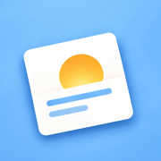

하루 1분, 다른 생각을 해보는 연습.
어떤 문장 지원
궁금한 점이나 불편한 점이 있으면 편하게 메일 주세요.
support@office.softseed.co.kr
문의하실 때 기기 모델, 운영체제 버전(iOS·Android), 앱 버전(설정 → 버전)을 함께 적어 주시면 더 빨리 도와드릴 수 있어요.
자주 묻는 질문
적은 생각은 어디에 저장되나요?
이 기기 안에만 저장돼요. 서버로 보내지 않고, 개발자도 볼 수 없어요. 앱이 인터넷을 쓰는 건 아래 경우뿐이고, 어느 경우에도 적은 생각은 보내지 않아요.
- 새 오늘의 문장과, 1.2.0 버전부터는 '모두의 생각 숲'에 보여 줄 숫자와 생각에서 단어를 고를 때 쓰는 낱말 목록을 내려받을 때
- 개인정보처리방침이나 이 지원 페이지를 열 때
- 앱에 오류가 났을 때 오류 정보를 보낼 때
- 1.1.0 버전부터 '사용 통계 보내기'를 켜 두었다면, 앱을 연 날·흐름을 저장했는지 같은 사용 통계를 보낼 때
- 1.1.0 버전부터 설정 → 문의하기에서 문의를 보낼 때
- 1.2.0 버전부터 서포터 구독을 사거나 구독 상태를 확인할 때 (App Store·Google Play와 통신해요)
사용 통계는 설정 → 사용 통계 보내기에서 언제든 끌 수 있어요.
기기를 바꾸면 기록을 옮길 수 있나요?
같은 종류의 기기로 바꿀 때는 기기 백업으로 기록과 설정이 함께 옮겨져요.
- iPhone: 새 iPhone을 설정할 때 빠른 시작이나 iCloud 백업에서 복원을 고르면 돌아와요. 컴퓨터 백업으로 복원해도 돼요. 앱만 지웠다가 다시 설치하면 기록은 돌아오지 않아요.
- Android: 기기의 Google 백업이 켜져 있으면, 새 기기를 같은 Google 계정으로 설정하거나 앱을 다시 설치할 때 마지막 백업이 돌아와요.
백업은 보통 하루에 한 번 이뤄져서, 마지막 백업 뒤에 적은 생각은 빠질 수 있어요. 기기를 바꾸기 전에 백업이 켜져 있는지 확인해 주세요 (iPhone: 설정 앱 → [이름] → iCloud → iCloud 백업 / Android: 설정에서 '백업'을 검색 — 기기마다 메뉴 이름이 조금 달라요).
1.2.0 버전부터는 설정 → 기록 내보내기로 기록을 파일 하나에 담아, 새 기기의 설정 → 기록 들여오기로 다시 넣을 수 있어요. iPhone과 Android 사이에서도 돼요. 다시 들여오려면 '들여오기용 (JSON)' 형식으로 내보내 주세요 — '읽기용 (텍스트)'는 읽기만 할 수 있어요.
여러 기기에서 함께 쓰는 동기화는 아직 없어요. 앱에 계정이 없어서 기록은 기기와 기기 백업, 그리고 내가 내보낸 파일에만 있어요.
매일 알림이 오지 않아요.
앱의 설정 → 매일 알림이 켜져 있는지, 기기에서 알림이 허용되어 있는지 확인해 주세요 (iPhone: 설정 앱 → 알림 → 어떤 문장 / Android: 설정 → 앱 → 어떤 문장 → 알림). 그날 이미 생각을 적었다면 그날은 알리지 않아요.
만든 이미지가 사진에 저장되지 않아요.
iPhone: 설정 앱 → 앱 → 어떤 문장 → 사진에서 '사진 추가만'을 허용해 주세요. Android 10 이상은 권한 없이 저장되고, Android 8–9는 저장할 때 묻는 저장공간 권한을 허용해 주세요. 앱은 사진을 추가만 하고, 기기의 사진을 읽지 않아요. 다만 1.2.0 버전부터 달력 이미지의 배경으로 직접 고른 사진 한 장은 달력을 그릴 때만 쓰고, 저장하거나 보내지 않아요.
기록을 지우고 싶어요.
흐름 화면의 더보기 메뉴에서 하나씩 지우거나, 설정 → 기록 전체 삭제에서 한 번에 지울 수 있어요. 지운 기록은 되돌릴 수 없어요.
서포터 구독을 해지하고 싶어요.
서포터 구독(1.2.0 버전부터)은 구독한 스토어 계정에서 해지해요. 앱의 설정 → 응원하고 꾸미기 → 구독 관리를 누르면 스토어의 구독 관리 화면이 열려요. 스토어에서 바로 열 수도 있어요.
- iPhone: 설정 앱 → [이름] → 구독에서 '어떤 문장'을 골라 해지해요.
- Android: Play 스토어 → 프로필 아이콘 → 결제 및 정기 결제 → 정기 결제에서 '어떤 문장'을 골라 해지해요 (메뉴 이름은 조금 다를 수 있어요).
해지해도 이미 결제한 기간이 끝날 때까지는 서포터 기능을 쓸 수 있어요. 기간이 끝나면 저장해 둔 이미지와 동영상은 그대로 남고, 고른 서포터 글꼴·배경은 기본값으로 돌아가요. 쓰기와 기록은 그대로 쓸 수 있어요. 앱을 지우는 것만으로는 구독이 해지되지 않으니, 꼭 스토어에서 해지해 주세요. 환불은 App Store·Google Play에 요청해 주세요.
기기를 바꾸거나 앱을 다시 설치했더니 서포터가 열리지 않아요.
구독은 스토어 계정에 있어요. 구독할 때와 같은 Apple 계정 또는 Google 계정으로 로그인한 기기라면 앱을 열 때 자동으로 확인돼요. 열리지 않으면 앱의 설정 → 응원하고 꾸미기 → 구매 복원을 눌러 주세요. 인터넷에 연결되어 있어야 해요.
'복원할 구매가 없어요'가 나오면, 기기의 스토어 계정이 구독한 계정과 같은지, 구독 기간이 끝나지 않았는지 스토어의 구독 관리에서 확인해 주세요. 구독은 스토어마다 따로라서, iPhone에서 한 구독을 Android에서 쓰거나 그 반대로 쓸 수는 없어요. 앱에는 계정이 없고, 스토어 계정으로만 확인해요.
개인정보
어떤 문장은 적은 생각을 수집하지 않아요. 모으는 건 앱 오류를 고치기 위한 오류 정보, 1.1.0 버전부터 '사용 통계 보내기'를 켜 둔 경우 앱을 고치는 데 참고할 사용 통계, 그리고 1.1.0 버전부터 설정 → 문의하기에서 직접 보낸 문의뿐이에요. 1.2.0 버전부터 살 수 있는 서포터 구독의 결제는 App Store·Google Play가 처리하고, 운영자는 결제 정보를 받지 않아요. 자세한 내용은 개인정보처리방침을 봐 주세요.